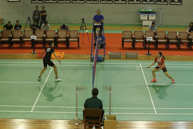
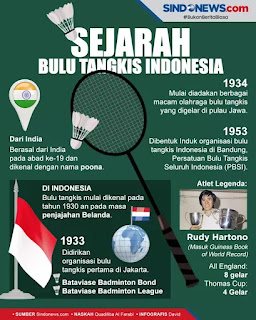

Bulu tangkis adalah olahraga raket yang dimainkan oleh dua orang (tunggal) atau empat orang (ganda).
Bulu tangkis pertama kali dimainkan di India dengan nama "Poona". Tentara Inggris membawa permainan ini ke Inggris pada abad ke-19, dan permainan ini menjadi populer di seluruh dunia. Organisasi resmi dunia adalah Badminton World Federation (BWF), didirikan tahun 1934.
Tujuannya adalah memukul kok melewati net dan membuatnya jatuh di lapangan lawan. Setiap set dimainkan hingga 21 poin dengan selisih dua poin.
Strategi berbeda untuk tunggal dan ganda, keseimbangan antara defensif dan ofensif sangat penting.